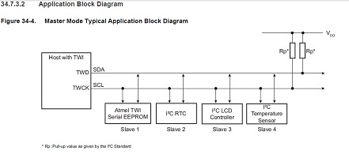

In this Example, we will implement a single master setup with the ATSAM4S as the master and an AT30TSE752A temperature sensor as the slave.
The master clock needs to be set before we enable the i2c peripheral clock. You will need pull up resistors on the i2c (TWI) pins, TWD and TWCK. On the dev board we have 4.7k pull up resistors on the TWI0 peripheral, but not the TWI1. In this example we will use TWI0.
I won't focus too much on how i2c works because there are lots of tutorials out there. It's a great protocol when you want to connect several devices to a microcontroller and use the least amount of pins possible, which is two. TWD and TWCK - data and clock respectively. Here is an i2c block diagram from the ATSAM4S datasheet:
*Note* Although the program flow for i2c is similar with AVR, Xmega and Atsam4s, there is one big difference in the order that registers get set. For the Atsam4s, it expects you to set the stop bit in the control register before you send the last read or write. If you don't set the stop bit, the Atsam4s will send an ACK instead of NACK on the last read.
#include "sam.h" #include "basic_uart.h" #define read 1 #define write 0 #define AT30TSE752A_temperatureAddress 0b1001000 (7bits) #define AT30TSE752A_temperatureRegister 0b00000000 #define AT30TSE752A_temperatureConfigurationRegister 0b00000001 #define AT30TSE752A_temperatureTlow 0b00000010 #define AT30TSE752A_temperatureThigh 0b00000011 #define AT30TSE752A_nonvolatileconfigregister 0x11 #define AT30TSE752A_eepromAddress 0b1010000 (7bits) void clock_init(){ REG_CKGR_MOR |= CKGR_MOR_KEY_PASSWD | CKGR_MOR_MOSCXTEN; while (!(REG_PMC_SR & PMC_SR_MOSCXTS)); REG_CKGR_MOR |= CKGR_MOR_KEY_PASSWD | CKGR_MOR_MOSCSEL; REG_PMC_MCKR |= MC_MCKR_CSS_MAIN_CLK; while (!(REG_PMC_SR & PMC_SR_MCKRDY)); REG_PMC_MCKR |= PMC_MCKR_PRES_CLK_1; while (!(REG_PMC_SR & PMC_SR_MCKRDY)); } void i2c_init(){ //enable i2c peripheral in PMC REG_PMC_PCER0 |= PMC_PCER0_PID19; //disable PIO control of pins to enable peripheral control REG_PIOA_PDR |= PIO_PDR_P3; REG_PIOA_PDR |= PIO_PDR_P4; //write direction - not really needed for setup REG_TWI0_MMR &= ~TWI_MMR_MREAD; //0=write, 1=read //enter slave address REG_TWI0_MMR |= TWI_MMR_DADR(0b1001000); /*from twi.h #define TWI_MMR_DADR_Pos 16 #define TWI_MMR_DADR_Msk (0x7fu << TWI_MMR_DADR_Pos) #define TWI_MMR_DADR(value) ((TWI_MMR_DADR_Msk & ((value) << TWI_MMR_DADR_Pos))) */ //clockwave form 100khz - 196, 400khz - 46, when fperipheral is 20MHz REG_TWI0_CWGR |= TWI_CWGR_CLDIV(196); REG_TWI0_CWGR |= TWI_CWGR_CHDIV(196); //formula tlow = ((CLDIV x 2^CKDIV)+4)xTper; //1/100,000 = ((CLDIV x 2^0)+4)x1/20,000,000; //disable slave mode REG_TWI0_CR |= TWI_CR_SVDIS; //enable master mode REG_TWI0_CR |= TWI_CR_MSEN; } void i2c_stop(){ REG_TWI0_CR |= TWI_CR_STOP; } void i2c_start(uint8_t slave_address, uint8_t mread){ //read=1, write=0 //set slave address REG_TWI0_MMR |= TWI_MMR_DADR(slave_address); //set read/write direction if (mread == write){ //write REG_TWI0_MMR &= ~TWI_MMR_MREAD; } else if (mread == read){ //read REG_TWI0_MMR |= TWI_MMR_MREAD; } //send start REG_TWI0_CR |= TWI_CR_START; } uint8_t i2c_readACK(){ uint8_t receiveByte; //if the stop bit in the control register is not set, ATSAM4S will automatically ACK after reading TWIn_RHR register //RXRDY will be set when data arrives in TWIn_RHR register while(!(REG_TWI0_SR & TWI_SR_RXRDY)); //reading data will clear RXRDY bit in the status register receiveByte = REG_TWI0_RHR; return receiveByte; } uint8_t i2c_readNACK(){ uint8_t receiveByte; //ATSAM4S requires stop bit to be set before data is set on the TWIn_RHR //when stop bit is set ATSAM4S will send a NACK instead of an ACK automatically i2c_stop(); //When data arrives in the TWIn_RHR register RXRDY is set in the Status Register while(!(REG_TWI0_SR & TWI_SR_RXRDY)); //reading the byte of data will set RXRDY to 0 receiveByte = REG_TWI0_RHR; while(!(REG_TWI0_SR & TWI_SR_TXCOMP)); return receiveByte; } void i2c_writeLastByte(uint8_t data){ //write data or slave register to THR REG_TWI0_THR |= data; //ATSAM4S requires stop bit to be set before data is written to TWIn_THR register i2c_stop(); //wait for ack while(!(REG_TWI0_SR & TWI_SR_TXRDY)); while(!(REG_TWI0_SR & TWI_SR_TXCOMP)); } void i2c_write(uint8_t data){ //write data or slave register to THR REG_TWI0_THR |= data; //wait for ack while(!(REG_TWI0_SR & TWI_SR_TXRDY)); } int main(void) { /* Initialize the SAM system */ SystemInit(); clock_init(); UART_Init(); i2c_init(); uint8_t config; //configure 11bits of data resolution //start communication with the temperature sensor i2c_start(AT30TSE752A_temperatureAddress,write); //point to the configuration register i2c_write(AT30TSE752A_temperatureConfigurationRegister); //send byte to configuration register i2c_writeLastByte(0b01000000); //start communication with the temperature sensor i2c_start(AT30TSE752A_temperatureAddress,write); //set pointer to the configuration register i2c_writeLastByte(AT30TSE752A_temperatureConfigurationRegister); //restart i2c_start(AT30TSE752A_temperatureAddress,read); //read configuration register and write byte to UART config = i2c_readNACK(); printString("configuration: "); printBinaryByte(config); printString("\r\n"); uint16_t temperatureMSB; uint16_t temperatureLSB; uint16_t temperatureFraction=0; while (1) { //start i2c i2c_start(AT30TSE752A_temperatureAddress,0); //write the register we want to read from i2c_writeLastByte(AT30TSE752A_temperatureRegister); //restart i2c i2c_start(AT30TSE752A_temperatureAddress,1); //read the first byte temperatureMSB = i2c_readACK(); //read the second and last byte temperatureLSB = i2c_readNACK(); //16 bits of temperature data /* bit 15 14 13 12 11 10 9 8 7 6 5 4 3 2 1 +- {temperature whole number} {fraction } {nothing } */ //Write the temperature to UART //sign if ((temperatureMSB & 0b10000000)>0){ printString("-"); } //use mask to not include first bit in temperature since it's the sign bit printByte(0b01111111 & temperatureMSB); printString("."); temperatureFraction += (500*((0b10000000 & temperatureLSB)>>7)); temperatureFraction += (250*((0b01000000 & temperatureLSB)>>6)); temperatureFraction += (125*((0b00100000 & temperatureLSB)>>5)); transmitByte('0' + ((temperatureFraction / 100) % 10)); transmitByte('0' + ((temperatureFraction / 10) % 10)); transmitByte('0' + (temperatureFraction % 10)); printString("\r\n"); temperatureFraction = 0; } }
{kind=link}
{kind=link}